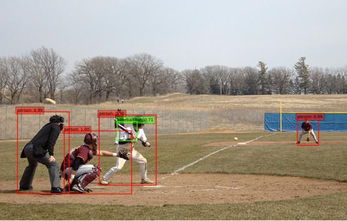
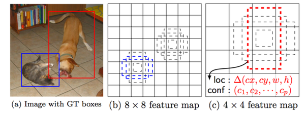

Object Detection networks
ML Laboratory 05
1 Objective
Students should understand the principles of object detection with single-stage object detection networks, and be able use a pretrained object detection model available in Matlab (Yolo / SSD).
2 Theoretical aspects
Single Shot Detector (SSD) is a CNN network architecture designed for fast detection (e.g. localization) of objects in an image.
Object detection
Object detection = locating certain objects in an image, and indicate their class.
An example1 is provided in the image below.

The model is trained on a series of images from different categories (e.g. person, baseball bat, car, bicycle, , ball etc.).
when predicting on a new image, the model returns a list of detected objects, each object having the following data:
The bounding box surrounding the object. This is defined by 4 pixel coordinates (e.g. bottom=140, top=300, left=74, right=128), but can come in different varieties:
- (left, top, right, bottom), or in another order
- (left, top, width, height)
- (center_x, center_y, semi-width, semi-height)
- etc
The class of the object (i.e. it is a person or a bicycle). The class will come with a certain confidence score (probability), just like we saw in Lab4 for classification networks. The model estimates a score for each possible class, and the highest score wins.
There may be some variations, depending on the model architecture used. For example, the YOLO models provide an additional “objectness” score indicating the confidence that the box is an actual object, regardless of class.
The SSD network architecture
The SSD (Single-Shot Detector) model architecture is presented below2:

YOLO models have a different, but similar, architecture.
The input of the network is a fixed-size \(W \times H \times 3\) image tensor.
The outputs of the network are the parameters for all \(N\) detection boxes:
- A matrix of \(N \times 4\) values with the predicted box displacements/distortions with respect to all the \(N\) anchor boxes (i.e. offset x, offset y, height scaling, width scaling).
- A matrix of \(N \times C\) with the predicted class scores for all the \(N\) boxes. \(C\) is the number of distinct classes in the dataset.
\(N\) is the total number of predicted boxes over all the image. It can be very large, e.g. 8732 boxes for a \(300 \times 300\) image.
For a larger \(1024 \times 640\) image, the number can be much larger, over 90000 (speaking from experience). Of course, it depends on the parameters chosen by the designer.
Output encoding and decoding
We have an image with one box around an object, done by a human (ground-truth). How do we tell the network what it should detect, in the training phase?
Output Encoding: Before training, we must convert the ground-truth box into displacements with respect to the anchor boxes of the network. This is known as encoding: we convert the desired box in the native format of the models’ output. During training, we show the image to the network, and we “tell it” to predict the correct displacements. An example is provided below3.

Output Decoding: When the network runs, it outputs the predicted displacements with respect to the anchor boxes. Afterwards, from these displacements we compute the final object position (in pixels). This is known as decoding the results of the network, since we translate the native network output into our desired format (pixels). This is typically done outside the network itself.
Non-Max Suppression

This is a key post-processing step in most object detectors.
A single object is predicted by many anchor boxes. As a result, we will have many predicted boxes around one object in the image, with slightly different values. We want just one box. Non-Max Suppression (NMS) is a procedure to select a single box out of a groups of overlapping boxes (the one with the highest confidence score), and ignore all the other opverlapping ones. An example illustrated below4.
The model
The network model is defined by the sequence of convolutional layers in the architecture. Open the newtork in Matlab in order to inspect the architure in detail.
The model parameters
The SSD model parameters are the parameters of all the convolutional the layers. There are no fully-connected layers in the SSD network, and neither in YOLO.
The cost function
The model produces two kinds of data:
- box locations (expressed as displacements/distortions with respect to the anchot boxes)
- box classification scores
When training, the predicted boxes are compared to the real ground-truth boxes available. For each ground-truth box, the best predicted box is selected (the predicted box with the correct class which overlaps the most with it), and the error is computed based on two terms:
The localization error: typically, is the absolute difference between the coordinates or displacements of the ground-truth box and the predicted box.
The classification error, which compares the class scores of the predicted box with the true ground-truth class. The cross-entropy loss function is typically used, just like it is used for all other classification tasks.
Besides the predicted boxes which are compared to the ground-truth, there are many predicted boxes which corespond to no ground truth box. There are a few different methods how to treat these, some methods (e.g. Focal Loss) being better than others.
Training
Training is done with backpropagation and gradient descent (or some variant of it).
Backpropagation = the technique to compute the derivatives of \(J\) with respect to all parameters in the network.
This is similar to all CNN networks.
3 Matlab tutorials walkthrough
Practical work is based on 3 Matlab examples:
Using the pretrained detectors available in Mathworks Github
- Use EfficientDet
- Download the zip file of the whole repository and unzip in Matlab Online
- Run the
efficientDetD0ObjectDetectionExample.mfile
Change the thresholds in postprocess.m file
Other tutorials:
4 Practical work
Exercise 1 - Run on another image
- Run the EffecientDet object detector on the image
Richarlison.jpg, and identify how many objects are detected, and their class. - Set the overlap threshold to 0.01 and run it on the
Richarlison.jpgimage. What happens? - Set the overlap threshold to 0.9 and the score threshold to 0.2, and run it on the
Richarlison.jpgimage. What happens? - Set a breakpoint on line 34 of the
postprocess.mfile and investigate the size of thescoresvector. What is its size? What does this number represent?
Exercise 2 - Aspect ratio
Run the EfficientDet object detector on the image
CarWide.jpg. Is the car detected? If yes, with what score?Identify the input resolution of the EfficientDet network.
Use the Matlab function
imresize()to resize the imageCarWide.jpgto the input resolution, and display it withimshow().What happens with the car image? This is the image which goes into the object detector network. Do you thinks this a problem?
Use any Windows tool to crop from the
CarWide.jpga square part containing the car, save it, and run the object detector on it.Does the detection score improve?
Exercise 3 - Partial objects
Use any Windows tool to crop from the
CarWide.jpga square part containing- about 3/4 of the car
- about 1/2 of the car
- about 1/4 of the car
Save each image and run the object detector on each of them. What is the detection score?
Exercise 4 - YoloX
- Go to the YoloX object detector from here: https://github.com/matlab-deep-learning/Pretrained-YOLOX-Network-For-Object-Detection
- Using the Github example, run this detector on the same image
Richarlison.jpg - Filter the bounding box on the image:
- Display only the objects with the highest score
- Display only the object whose center (the center of the box) is the left-most among all objects
- Display only the non-person objects
- Identify the two threshold values in the
postprocess.mfunction, the score threshold and the overlap threshold. - Set both thresholds to 0.03 and display the results. How many objects are detected now?
- Set the score threshold to 0.1 and the overlap threshold to 0.8. How many objects are detected now?
- What is the total number of boxes predicted by the YoloX model?
Exercise 5 - Non-max suppression
Write a small Matlab function called IOU which computes the intersection-over-union of two bounding boxes, given as vectors [left, right, bottom, top].
Use the rectint() function to compute the intersection of the boxes.
function result = IOU(box1, box2)
% Compute IOU of two boxes
% Each box is a 4-element vector: [left, right, bottom, top]
...
endUse the function to compute the IOU of the following two bounding boxes:
A = [50, 100, 120, 200];
B = [10, 80, 40, 140];Exercise 6 - SSD
Run the first steps of the Object Detection Using SSD Deep Learning tutorial, and stop before the creation of the SSD network.
Investigate the network architecture by running
analyzeNetwork()on the network variablelgraph- How many layers are there?
- What is the required size of the input image?
- Which are the two output layers?
- How many boxes are predicted in all?
Run the next steps of the tutorial, and observer the detected boxes on the image.
Download a similar image from the Internet and run the model on it. Are the objects detected well?
Locate the call to the
detect()function and change the detection threshold to 0.01. What happens?- What happens if the threshold is set too low?
- What would happen if the threshold is set too high?
- What is the trade-off involved in choosing a value for the threshold?
Set the detection parameter ‘SelectStrongest’ to
false:detect(... 'SelectStrongest', false). Set the threshold to 0.001. What changes? How many detected boxes are now?Set the detection parameter ‘SelectStrongest’ to
false:detect(... 'SelectStrongest', false). Reset the threshold to a reasonable value (e.g. 0.4). What changes? How many detected boxes are now?- Why do we have multiple boxes around a single object?
- Imagine a procedure to keep only a single detection box around an object (this is known as Non-Max Suppresion (NMS))
Set the variable
doTrainingtotrue(or 1) and train the model. How fast does it work?
5 Final questions
TBD
Footnotes
image from https://lambdalabs.com/blog/how-to-implement-ssd-object-detection-in-tensorflow/↩︎
image from https://towardsdatascience.com/understanding-ssd-multibox-real-time-object-detection-in-deep-learning-495ef744fab↩︎
image from the SSD paper https://arxiv.org/abs/1512.02325↩︎
image from Incremental Training for Image Classification of Unseen Objects↩︎